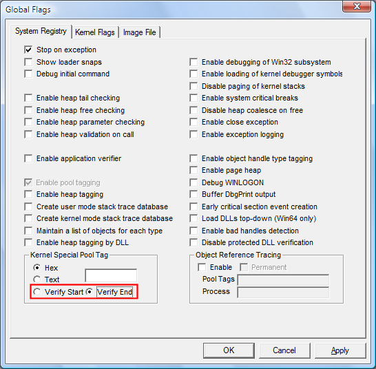

You can use the Verify Start or Verify End option in GFlags to align allocations from the special pool so that they are best suited to detect overruns (accessing memory past the end of the allocation) or underruns (accessing memory that precedes the beginning of the allocation).
-
Verify Start enables underrun detection on allocations from the special pool. This causes a bug check when a program tries to access memory preceding its special pool memory allocation.
-
Verify End enables overrun detection on allocations from the special pool. This causes a bug check when a program tries to access memory beyond its special pool memory allocation. Because overruns are much more common, Verify End is the default.
In Windows Vista and later versions of Windows, this option is available on the System Registry and Kernel Flags tabs. In earlier versions of Windows, it is available only on the System Registry tab.
 To specify special pool alignment
To specify special pool alignment
-
Click the System Registry tab.
-
Click Verify Start or Verify End.
-
Click Apply.
The following screen shot shows the Verify Start and Verify End settings on the System Registry tab.

Comments
The Verify Start and Verify End alignment settings apply to all allocations from the special pool, including special pool allocation requests set in Driver Verifier. If you set the alignment without specifying a pool tag or allocation size, then the settings apply only to requests set in Driver Verifier.